El Estrés
El estrés es una reacción psicológica y física normal a las exigencias de la vida. Puede ser entendido como la respuesta natural del cuerpo frente a situaciones percibidas como amenazantes o desafiantes. El estrés implica cambios que afectan a casi todos los sistemas del cuerpo, influyendo en cómo se sienten y se comportan las personas.

Test de Estrés
El Inventario Sistémico Cognoscitivista para el estudio del estrés académico (SISCO SV-21) incluye 21 ítems diseñados para evaluar el estrés académico en estudiantes. Estos ítems se agrupan en tres dimensiones: estresores, síntomas y estrategias de afrontamiento.